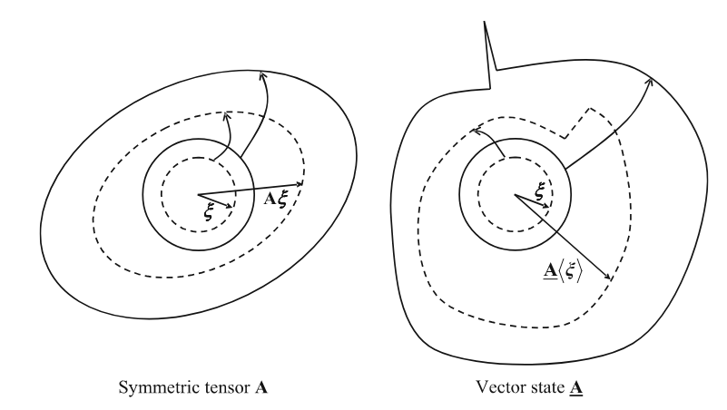

Seminar 4: From bond-based to state-based I (Theory)
Definition of states
- A state is not in general a linear function of $\xi$ .
- A state is not in general a continuous function of $\xi$.
- The real Euclidean space $V$ is infinite-dimensional, while the real Euclidean space $\mathcal{L}_2$ (the set of second order tensors) has dimension 9
Definitions
scalar state
\[\underline{a}\langle \boldsymbol{\xi}\rangle\]
vector state
\[\underline{\mathbf{A}}\langle \boldsymbol{\xi}\rangle\]
Shape tensor
\[\mathbf{K} = \underline{\mathbf{X}}*\underline{\mathbf{X}} = \int_{\mathcal{H}}\underline{\omega}\langle \boldsymbol{\xi}\rangle\underline{\mathbf{X}}\langle \boldsymbol{\xi}\rangle\otimes\underline{\mathbf{X}}\langle \boldsymbol{\xi}\rangle dV\]
- is positive definite

Figure taken from [14]
Constitutive Models
\[\boldsymbol{\xi} = \mathbf{x}'-\mathbf{x}\]
Deformation vector state field
\[\underline{\mathbf{Y}}[\mathbf{x},t]\langle \boldsymbol{\xi}\rangle=\mathbf{y}(\mathbf{x}+\boldsymbol{\xi},t)-\mathbf{y}(\mathbf{x},t)\]
A material is elastic if there exists a differentiable scalar valued function $W(·) : \mathcal{V} \rightarrow \mathbb{R}$ such that
\[\underline{\mathbf{T}}= \hat{\underline{\mathbf{T}}}(\underline{\mathbf{Y}})= \nabla W(\underline{\mathbf{Y}})\]
\[W\]
is the strain energy density function.
Ordinary state-based
Ordinary and elastic means
- It is mobile
- There exists a scalar-valued function $w$
\[W(\underline{\mathbf{Y}})= w(\underline{y})\qquad\text{and}\qquad \underline{y}=|\underline{\mathbf{Y}}|\]
- For this $w$
\[\underline{t}(\underline{y})= \nabla w(\underline{y})\]
PD solid elastic
Concept uses Lamé coefficients $\boldsymbol{\sigma} = 2G\boldsymbol{\varepsilon} + K \; \operatorname{tr}(\boldsymbol{\varepsilon}) I$
\[\underline{e}\langle\boldsymbol{\xi}\rangle=|\mathbf{F}\boldsymbol{\xi}| - |\boldsymbol{\xi}|=\varepsilon_{ij}\frac{\xi_i\xi_j}{|\boldsymbol{\xi}|}\]
\[\varepsilon_{ij}=\frac12(u_{i,j}+u_{j,i})\]
\[\underline{e}^d\langle\boldsymbol{\xi}\rangle=\varepsilon_{ij}^d\frac{\xi_i\xi_j}{|\boldsymbol{\xi}|}\]
\[W=\frac{\alpha}{2}\int_{\mathcal{H}}\underline{\omega}\langle\boldsymbol{\xi}\rangle(\underline{e}^d\langle\boldsymbol{\xi}\rangle)^2dV_{\boldsymbol{\xi}}\]
under assumption of a spherical non-local domain.
\[W = \frac{\alpha m}{15}\varepsilon_{ij}^d\varepsilon_{ij}^d\]
compared with the strain energy density of the classical model.
\[\Omega=G\varepsilon_{ij}^d\varepsilon_{ij}^d\]
\[\alpha=\frac{15G}{m}\]
\[\underline{x}=|\underline{\mathbf{X}}|=|\boldsymbol{\xi}|\quad\underline{y}=|\underline{\mathbf{Y}}|\]
\[\underline{e}=\underline{y}-\underline{x}=|\boldsymbol{\eta}|\]
\[\underline{y}-\underline{x}\neq|\boldsymbol{\eta}|\]
\[\underline{t}=|\underline{\mathbf{T}}|\]
Weighted volume
\[m_V = \int_{\mathcal{H}} \underline{\omega}\langle \boldsymbol{\xi}\rangle \underline{x} \underline{x} dV\]
Dilatation
\[\theta = \frac{3}{m_V} \int_{\mathcal{H}}\underline{\omega}\langle \boldsymbol{\xi}\rangle \underline{x} \underline{e}\langle \boldsymbol{\xi}\rangle dV\]
\[\underline{t} = \frac{\omega\langle \boldsymbol{\xi}\rangle }{m_V}\left[3K \theta \underline{x} + 15G \underline{e}^d \right]\]
Decomposition in the devatoring and isotropic part of the strain
\[\underline{e}^d\langle \boldsymbol{\xi}\rangle = \epsilon_{ij}^d\xi_i\frac{x_j}{|\boldsymbol{\xi}|}\]
\[\underline{e}^i\langle \boldsymbol{\xi}\rangle = \epsilon_{ij}^i\xi_i\frac{x_j}{|\boldsymbol{\xi}|}\]
The force density can be determined as
\[\underline{\mathbf{T}}=\underline{t}\frac{\underline{\mathbf{Y}}}{|\underline{\mathbf{Y}}|}\]
Correspondence
\[\underline{\mathbf{Y}}\langle \boldsymbol{\xi}\rangle=\mathbf{F}\boldsymbol{\xi}\]
Then the peridynamic constitutive model corresponds to the classical constitutive model at $\mathbf{F}$ [14].
\[\mathbf{F}=\int_{\mathcal{H}}(\underline{\omega}\langle \boldsymbol{\xi}\rangle\underline{\mathbf{Y}}\langle \boldsymbol{\xi}\rangle\otimes\underline{\mathbf{X}}\langle \boldsymbol{\xi}\rangle dV )\cdot \mathbf{K}^{-1}\]
\[\mathbf{K}=\int_{\mathcal{H}}\underline{\omega}\langle \boldsymbol{\xi}\rangle\underline{\mathbf{X}}\langle \boldsymbol{\xi}\rangle\otimes\underline{\mathbf{X}}\langle \boldsymbol{\xi}\rangle dV\]
\[\boldsymbol{\sigma} = f(\mathbf{F}, t, T, ...)\]
\[\mathbf{P} = \text{det}(\mathbf{F})\boldsymbol{\sigma}\mathbf{F}^{-T}\]
\[\underline{\mathbf{T}} = \underline{\omega}\langle \boldsymbol{\xi}\rangle\mathbf{P}\mathbf{K}^{-1}\mathbf{\xi}\]
Zero-energy modes
For correspondence models, the so called zero-energy modes could occur [15]. These modes are non-physical and lead to unstable or unreasonable solutions. Several stabilization methods were published to overcome this problem [16], [17], [18], [19],[20],[21].
\[\underline{\mathbf{T}}^C=\underline{\mathbf{T}}+\underline{\mathbf{T}}^S\]
\[\underline{\mathbf{T}}^S\langle \boldsymbol{\xi}\rangle = \underline{\omega}\langle\boldsymbol{\xi}\rangle\mathbf{C}_1\underline{\mathbf{z}}\]
\[\underline{\mathbf{z}}\langle \boldsymbol{\xi}\rangle= \underline{\mathbf{Y}}\langle\boldsymbol{\xi} \rangle-\mathbf{F}\boldsymbol{\xi}\]
\[\mathbf{C}_1=\mathbf{C}\cdot\cdot\mathbf{K}^{-1}\]
x = [1,2,3,4,5]
a = [1,2,3,4,5]
integral_a = sum(a)
b=[1,2,3.1,3.9,5]
integral_b = sum(b)
display(integral_a - integral_b)
function def_grad(x,y)
K = sum(x)
F = sum(y)/K
display("F*x $(F.*x')")
display("z $(F.*x' - y)")
end
x = [1,2,3,4]
y = [0.5 1. 1.5 2]
println("Constant deformation gradient in non-local domain")
def_grad(x,y)
y = [0.5 0.9 1.6 2]
println("Non-Constant deformation gradient in non-local domain")
def_grad(x,y)
Properties of $\mathbf{K}$ and $\mathbf{F}$
using LinearAlgebra
x = [1 0;0 1;0 -1; -1 0; 1 1; -1 -1]
K = x'*x
display(K'-K)
display(rank(K))
y = [1.1 0;0 1.0;0 -1; -1 0; 1 1; -1 -1]
F = y'*x / K
display(F'-F)
display(rank(F))
strain = 0.5*(F'*F - I)
display(strain'-strain)
display(rank(strain))